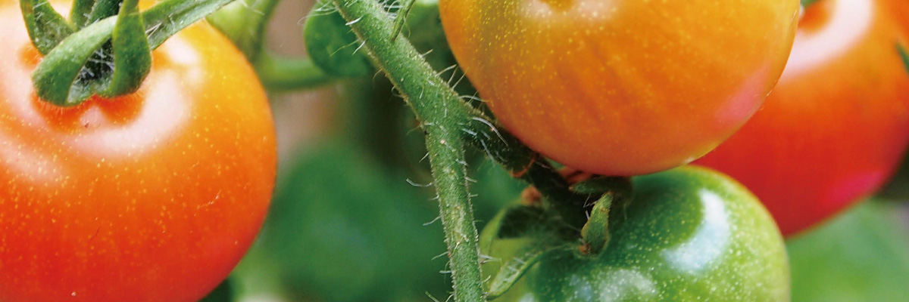

发展战略
DEVELOPMENT
STRATEGY
平安好生活 多利来"食"现！
中国平安投资控股，全面开启平安好生活！
2016年3月，中国平安人寿加大多利农庄投资力度，投资主体平安人寿的董事长丁当表示：“有机农业是造福人类的一 件好事，平安投资多利，除了集团战略和财务的考量，更是希望和多利一起做一件有意义的事情。”多利农庄创始人、董 事长张同贵则表示，选择中国平安作为投资方，是看中中国平安与多利拥有共同的健康服务理念和雄厚的资本实力以及上 100万级的销售团队、 8000多万优质客户资源共建商业生态系统。所有有机产品都是经过严格的有机认证。

平安联手多利开启“平安好生活”项目。在“平安好生活，多利来‘食’现”口号的引领下，多利立足于有机蔬菜生产，并
放眼全球优质食材供应链，以多利的品质标准，转型升级为：为中国家庭用户提供新鲜、安全、健康、美味的全品类食
材，以建立全品类、全渠道营销体系为目标，构建新一代大众安全食品供应链体系，提供产品从生产基地直送到用户餐
桌一站式服务,打造面向全国消费者的健康安全食生活方式。
平安和多利达成战略合作，更见证了多利的有机品质。双方跨业合作，搭建出金融财富与健康生活共赢的开放平台。多利
从有机蔬菜的先导者正式转型为健康安全食生活方式的提供者,将多利自有基地有机食材与国内国际优质食材完美嫁接，与
多利发展战略和平安3.0时代战略模式契合，将健康、安全、美味的食材一站式配送到全国消费者餐桌。
销售渠道
多利的全渠道销售模式
会员直销（数百家优质企业和10万多个家庭会员）
平安渠道（平安互联网业务、移动端APP，用户超过2亿）
供应链渠道（精品超市、专卖店、企业员工食堂直供）
线上线下O2O（线上商城 APP、多利实体店）

六大升级
品牌升级：
地域品牌（上海名牌、著名有机蔬菜生产企业）→国际品牌（健康安全食生活品牌）
规模升级：
全国九大基地，3万多亩有机种植面积→自有基地+合作基地（平安集团战略投资共同开启平安好生活）
渠道升级：
单渠道（会员制直销宅配模式）→全渠道（企事业单位/家庭/个人/商超供应链）
平台升级：
PC端商城→手机客户端微商城+APP+天猫+京东
产品升级：
有机蔬菜（一年四季直供）→全品类健康优质食材（涵盖时令蔬果、肉禽蛋奶、水产 海鲜、米面粮油、南北干货等，一站式满足人们餐桌全品类需求）
服务升级：
地区（上海、北京、杭州、无锡、四川、山东、海南七大省市）→全国